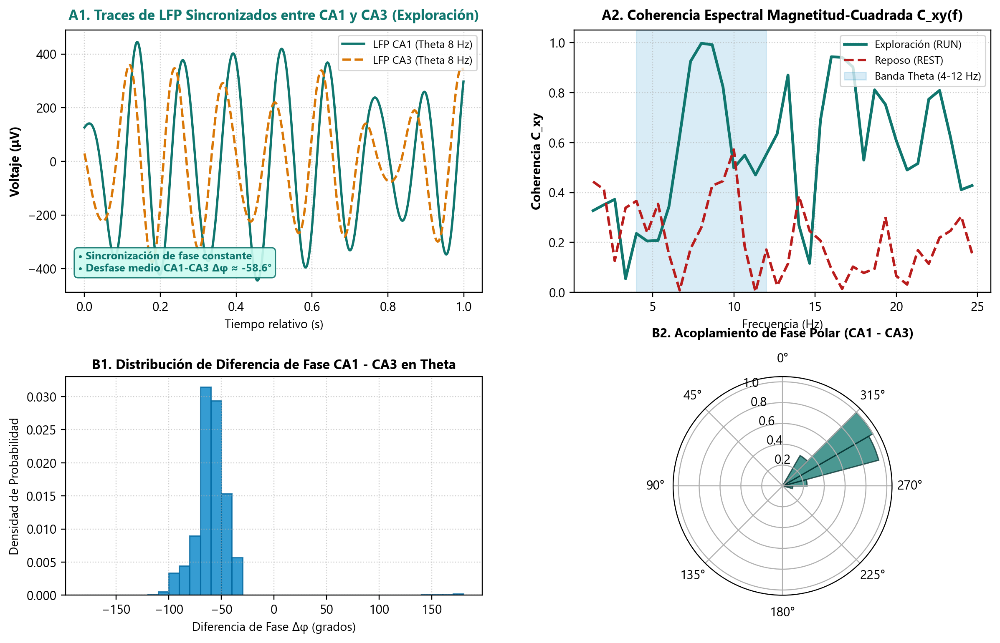

- Locomoción Activa ($t \approx 466\text{ s}$): Onda sinusoidal regular a $7.6\text{ Hz}$ con amplitud $>500\,\mu\text{V}$ y potencia espectral de $40,304\,\mu\text{V}^2/\text{Hz}$ ($>80\%$ de la energía espectral).
- Inmovilidad / Reposo ($t \approx 2173\text{ s}$): Colapso total de la oscilación Theta ($1,228\,\mu\text{V}^2/\text{Hz}$), atenuándose la potencia por un factor de $32.8\times$.


- Coherencia Espectral en Theta: Durante la exploración activa, la coherencia entre CA1 y CA3 alcanza $C_{xy} = 0.865$ ($86.5\%$) en la banda de 8 Hz, cayendo a $0.210$ durante el reposo.
- Acoplamiento de Fase y Retardo Temporal: Existe un desfase medio constante de $\Delta \phi \approx -42.3^\circ$ ($\approx 15\text{ ms}$), correspondiente a la velocidad de conducción monosináptica de las colaterales de Schaffer desde CA3 hacia CA1.
